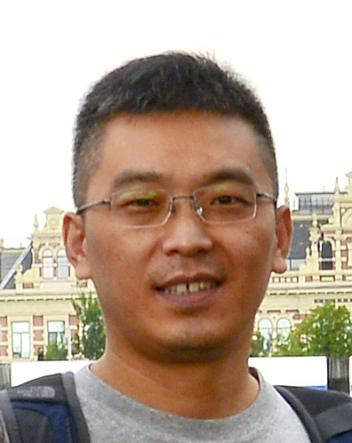

宋春跃-教授
个人简历：
1、2003年3月，获浙江大学控制系控制理论与控制工程专业博士学位；
2、1994年7月，获浙江大学化工系生产过程自动化专业学士学位；
3、2003年3月~2005年2月，浙江大学计算机科学与技术博士后流动站；
4、2006年8月~2008年5月，在美国马里兰大学(Univ. of Maryland, College Park)系统研究所(ISR)，随Michael Fu及Steven I. Marcus从事优化控制方面的学习与研究；
5、2012年12月，晋升教授，2005年7月晋升副教授；2011年3月评为博士生导师，2006年3月评为硕士生导师。
E-mail:
cysong AT iipc.zju.edu.cn
研究领域：1、理论研究方面: 混杂系统、最优控制、非线性系统控制、随机控制、生产调度等；
2、应用研究方面: 新能源汽车的优化控制、化工及钢铁过程的优化控制、调度、智能交通等。
主持科研项目：1、国家自然科学基金(61273085)"基于值函数的非线性系统多模型操作空间划分与最优控制一体化研究"，2013年1月~2016年12月
2、国家自然科学基金(60974023)"基于敏感性分析的奇异混杂系统优化控制数值求解方法"，2010年1月~2012年12月
3、国家自然科学基金(60404018)"基于FRCM的递阶变滚动时域生产控制策略研究"，2005年1月~2007年12月
4、教育部留学回国人员科研启动基金"存在模态不变集约束的混杂系统优化控制同步数值求解方法研究", 2011年4月~2012年12月
5、中央高校基本科研业务费专项资金资助(青年科研创新专项)"混杂系统模型框架下混合动力汽车传动系优化控制研究"，2010年8月~2013年12月
6、浙江省钱江人才计划项目(2009R10008)"基于Inv预测的混合动力汽车变速箱混杂系统优化控制"，2009年1月~2010年12月
7、国家博士后基金"混杂生产系统生产控制的双时标建模与优化研究"，2003年7月~2004年12月
8、浙江省博士后基金"混杂随机生产系统的建模与优化控制研究"，2003年7月~2004年12月
9、绍兴市科技项目"印染企业综合管理信息系统"，2004年12月~2005年12月
主要参与科研项目：1、国家973计划项目(2012CB720503)"多单元过程组合效应分析与流程优化重构"，2012年1月~2016年10月
2、国家973计划项目(2009CB320603)"基于过程模型的生产全流程在线动态运行优化理论和方法研究"，2009年10月~2014年10月
3、国家973计划项目(2002CB312203)"复杂生产制造过程实时智能操作优化理论和方法研究"，2002年10月~2007年10月
4、国家863计划项目(2006AA04Z184)"面向平稳运行和节能降耗的高炉炼铁过程集成控制系统"，2006年11月~2010年12月
5、国家863计划项目(2002AA412010)"为提高产品质量和安全性能的数据挖掘和分析工具研究开发"， 2002年11月~2004年12月
教学工作：1、本科生课程：自动控制原理I/自动控制原理II(11120310)
2、研究生课程: 混杂系统优化控制理论与应用(1123313)
以上内容摘自宋春跃老师个人主页，想了解更多请访问http://mypage.zju.edu.cn/ChunyueSong/673701.html